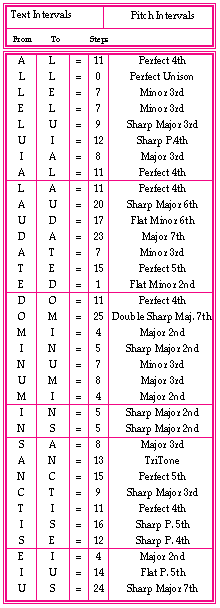

A pitch interval analysis is shown in Example 7 for the third movement, first phrase, mm. 1-5, in the same exact interval range in which it was composed. This analysis demonstrates the sum of the intervals' quality, and the total percentage of each of the categories. We classified the intervals in the traditional manner of three categories : A, perfect consonance; B, imperfect consonance; and C, dissonance; and three secondary categories: A1, secondary perfect consonance; B1, secondary imperfect consonance; and C1, secondary dissonance.
Example 7: Interval analysis of "Alleluia. Laudate Dominum in sanctis eius"

Original file name: b3Reteplas - converted on Tuesday, 24 June 1997, 21:00